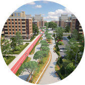

<div class="sect sect_4" id="sect_4">
	<div class="sect_content">
		<div class="wrapper">
			<div class="row">
				<div class="col-8 off-1">
					<div class="sect_header">ЭТО СИСТЕМА <span class="b">«ВСЁ ВКЛЮЧЕНО»</span></div>
					<div class="sect_desc">Неоспоримым преимуществом квартала NEWПИТЕР является продуманность каждой детали. Во-первых, это великолепно продуманная инфраструктура: собственные общеобразовательные школы, детские сады и пешеходный бульвар будут находиться всего в паре минут ходьбы от вашего дома, в периметре квартала. Территория комплекса – уютная и просторная, оборудована большим количеством машино-мест, множеством детских площадок внутри закрытых дворов, хорошо освещена и благоустроена газонами, клумбами и зелеными насаждениями. Помимо этого, ваша квартира будет передана вам с улучшенной предчистовой отделкой, и в ней обязательно будет балкон, если вы решите поселиться выше первого этажа.</div>
				</div>
			</div>
					

			<div class="sect_block_list row">
				<div class="sect_block col-3">
					
					<div class="sect_block__title">ДВОРЫ <br>БЕЗ МАШИН</div>
					<div class="sect_block__desc"><a href="javascript:;" class="close"></a>Внутренние дворы закрыты, попасть в них можно только через парадную, что препятствует доступу посторонних людей и автомобилей на территорию детских и спортивных площадок. Это сделает ваши прогулки с детьми безопасными и комфортными.</div>
				</div>

				<div class="sect_block col-3">
					
					<div class="sect_block__title">6 ДЕТСКИХ <br>САДОВ</div>
					<div class="sect_block__desc"><a href="javascript:;" class="close"></a>В квартале предусмотрено строительство 6 детских садов по 145-190 мест каждый. В январе 2017 года состоялось открытие первого детского сада проекта на 145 мест. Он оборудован всем необходимым игровым и обучающим инвентарем, отделка выполнена в ярких и насыщенных цветах, а новейшие технические решения обеспечивают безопасность ваших детей.</div>
				</div>

				<div class="sect_block col-3">
					
					<div class="sect_block__title">2 ОБЩЕОБРАЗОВАТЕЛЬНЫЕ <br>ШКОЛЫ</div>
					<div class="sect_block__desc"><a href="javascript:;" class="close"></a>Помимо жилых домов, в комплексе NEWПИТЕР будут построены две общеобразовательные школы на 550 и 820 учащихся. Обе школы будут находиться в шаговой доступности в периметре квартала, что позволит вашим детям посещать их самостоятельно, освобождая вас от этой нагрузки.</div>
				</div>

				<div class="sect_block col-3">
					
					<div class="sect_block__title">БУЛЬВАР <br>БЕЛЫХ НОЧЕЙ</div>
					<div class="sect_block__desc"><a href="javascript:;" class="close"></a>Пешеходный бульвар Белых Ночей – собственный аналог парков Нью-Йорка, Лондона и Москвы, проходящий сквозь весь квартал. Здесь разместятся площадь с амфитеатром, большая детская площадка, променад и плодовый сад. Проектом предусмотрены велодорожки, спортивный сектор для индивидуальных и групповых видов спорта, кафе и зоны отдыха.</div>
				</div>


				<div class="sect_block col-3">
					
					<div class="sect_block__title">СОВРЕМЕННЫЕ <br>ДЕТСКИЕ ПЛОЩАДКИ</div>
					<div class="sect_block__desc"><a href="javascript:;" class="close"></a>В каждом дворе установлена яркая и красивая современная детская площадка со всем необходимым игровым и спортивным оборудованием. Напольное покрытие создано из особых амортизирующих материалов, что позволяет исключить случайные травмы у детей.</div>
				</div>

				<div class="sect_block col-3">
					
					<div class="sect_block__title">БАЛКОН ИЛИ ЛОДЖИЯ <br>В КАЖДОЙ КВАРТИРЕ</div>
					<div class="sect_block__desc"><a href="javascript:;" class="close"></a>Вне зависимости от того, на какую квартиру падет ваш выбор, в каждой из них, начиная со второго этажа,  предусмотрен застекленный балкон. </div>
				</div>

				<div class="sect_block col-3">
					
					<div class="sect_block__title">БЛАГОУСТРОЕННАЯ <br>ТЕРРИТОРИЯ</div>
					<div class="sect_block__desc"><a href="javascript:;" class="close"></a>В жилом квартале NEWПИТЕР предусмотрено комплексное благоустройство территории и большая площадь озеленения. Продуманный ландшафтный дизайн внутренних двориков, современные детские игровые площадки, площадки для воркаута, спортивные зоны и велосипедные дорожки – все это сделает жизнь вашей семьи еще интереснее и приятнее.</div>
				</div>

				<div class="sect_block col-3">
					
					<div class="sect_block__title">УЛУЧШЕННАЯ <br>ПРЕДЧИСТОВАЯ ОТДЕЛКА</div>
					<div class="sect_block__desc"><a href="javascript:;" class="close"></a>Все квартиры с улучшенной предчистовой отделкой сдаются с оштукатуренными и прошпатлеванными стенами, с выполненной стяжкой пола, разводкой систем отопления и энергоснабжения, с установленными счетчиками учета энергоресурсов и электрофурнитурой, а также металлопластиковыми окнами и металлическими дверьми.</div>
				</div>
			</div>
		</div>
	</div>
</div>